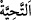

kendisiyle birlikte yemek yiyecek bir kimseyi bulması mümkün değildir. Fakat birini
bulup da onu kendisiyle beraber yemeye dâvet etmeyen kimse hakkında da uyarı ve
tehdid vâkî olmuştur. Nitekim Peygamberimiz (s.a.): “İki gözü olan birisi kendisine
baktığı halde yemek yiyen ve onu yemeğine ortak etmeyen kişi, devası olmayan bir
hastalığa tutulur” buyurmuştur.
İmam Nesefî (r.h.) der ki: Âyette geçen “ (toplu halde)” ifâdesi, yolculuklarda
ortak kumanya hazırlamanın (tenâhüd) cevâzına delâlet eder. Tenâhüd, arkadaşlardan
her birinin, eşit seviyede bir yiyecek ortaya koymaları ve birlikte yemeleri anlamına
gelir. Bazıları da derler ki: Yiyecekler karıştırılıp da her biri ondan yediği zaman evlâ
olan birbirleriyle helâlleşmeleridir. Ya da henüz yemeğe başlamadan bütün yiyecekleri
güvenilir birine bağışlarlar, sonra o da tekrar onlara bağışlar.
Verilen ruhsatlardan sonra evlere giriş edebini öğretmek üzere de Allah Teâlâ şöyle
buyurmaktadır: Bulunulan makamın karînesiyle anlaşılacağı üzere zikredilen “Evlere”
yemek için veya başka bir maksadla “girdiğiniz zaman, Allah tarafından” yâni O’nun
emriyle konulmuş “mübarek” hayrın ve sevabın fazlasını ve devamını hâsıl eden “ve
pek güzel” duyan kimseyi hoşnud eden “bir yaşama dileği olarak kendinize
(birbirinize) selâm verin.” Yâni aranızdaki dînî ve nesebî akrabalık sebebiyle bizzat
kendiniz yerinde olan o ev halkına selâm vermekle işe başlayın.
“ Allah Teâlâ katında bulunan hayâtı istemek demektir. “ ise selâm verilen
kişiye Allah Teâlâ’dan selâmet dilemektir.
“İşte” yapılan bu açıklamalarda olduğu gibi “Allah,” içlerinde bulunan şer‘î esasları,
hükümleri ve âdâbı “düşünüp anlayasınız” gerekleriyle amel ederek iki cihan saâdetini
kazanasınız “diye size” hükümlere delâlet eden “âyetleri böyle açıklar.” Yâni onları,
hükümlere delâletleri apaçık olarak indirir.
Enes (r.a.)’dan rivâyete göre o, şöyle demiştir: Rasûlullah (s.a.)’e on sene hizmet
ettim. Yaptığım bir iş için asla: “Niçin böyle yaptın?”, kırdığım bir şey için de: “Bunu
niçin kırdın?” demedi. (Bir defasında) ayakta durmuş mübarek ellerine su dökerken
başını kaldırıp: “Sana faydalanacağın üç haslet öğreteyim mi?” buyurdu. Ben de
“Evet, babam-anam sana fedâ olsun yâ Rasûlallah.” dedim. Şöyle buyurdu:
“Ümmetimden biriyle karşılaştığın zaman selâm ver ki ömrün uzasın. Evine girdiğin
zaman oradakilere selâm ver ki hayrı çoğalsın. Kuşluk namazı kıl ki o, iyilerin ve
Allah’a dönenlerin namazıdır.”[187]
Fakir (Bursevî) der ki: Rasûlullah (s.a.) dışarıda mü’min birine verilen selâmı
“tahiyye” kelimesinin lügat mânâsıyla düşünüp bunun ömrün uzun olmasına sebep
olduğunu söylemiştir. Çünkü Allah Teâlâ belki kendisine selâm verilen kişinin duâsına
icâbet eder de selâm veren kişinin ömrü uzar, yâni ömrünün bereketini görür. Yine
Rasûlullah (s.a.), evin içinde verilen selâmı “bereket” mânâsıyla mülâhaza edip bunun
pek çok hayra sebep olacağını söylemiştir. Çünkü evlerle ilgili olarak çoğunlukla